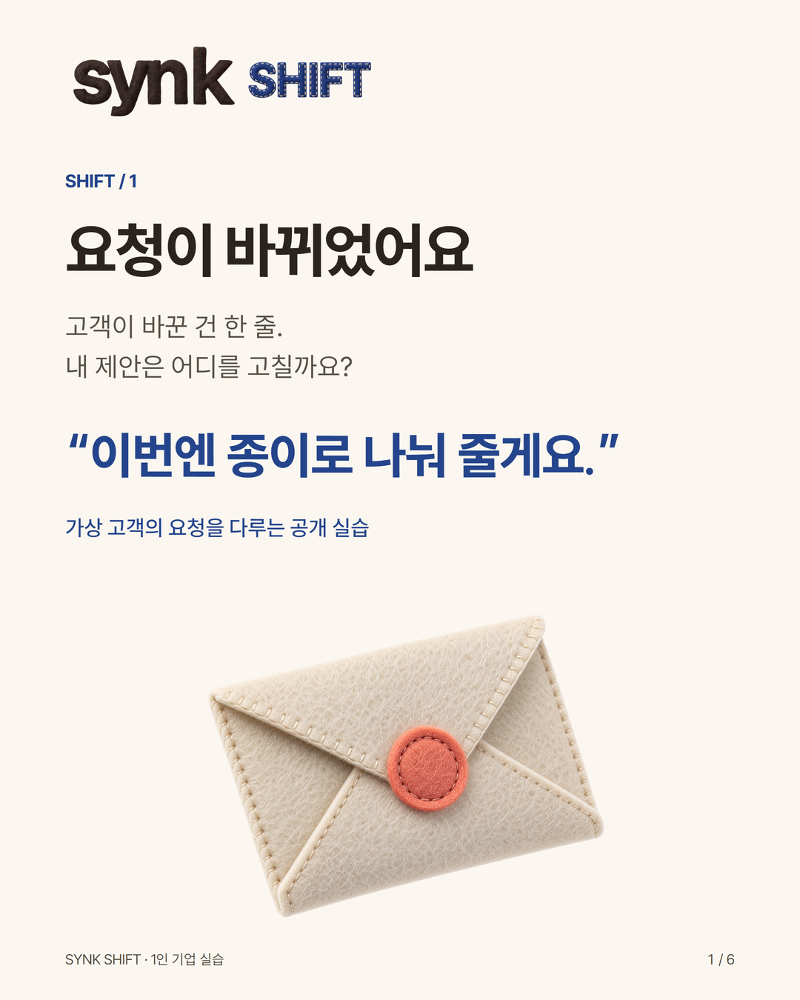
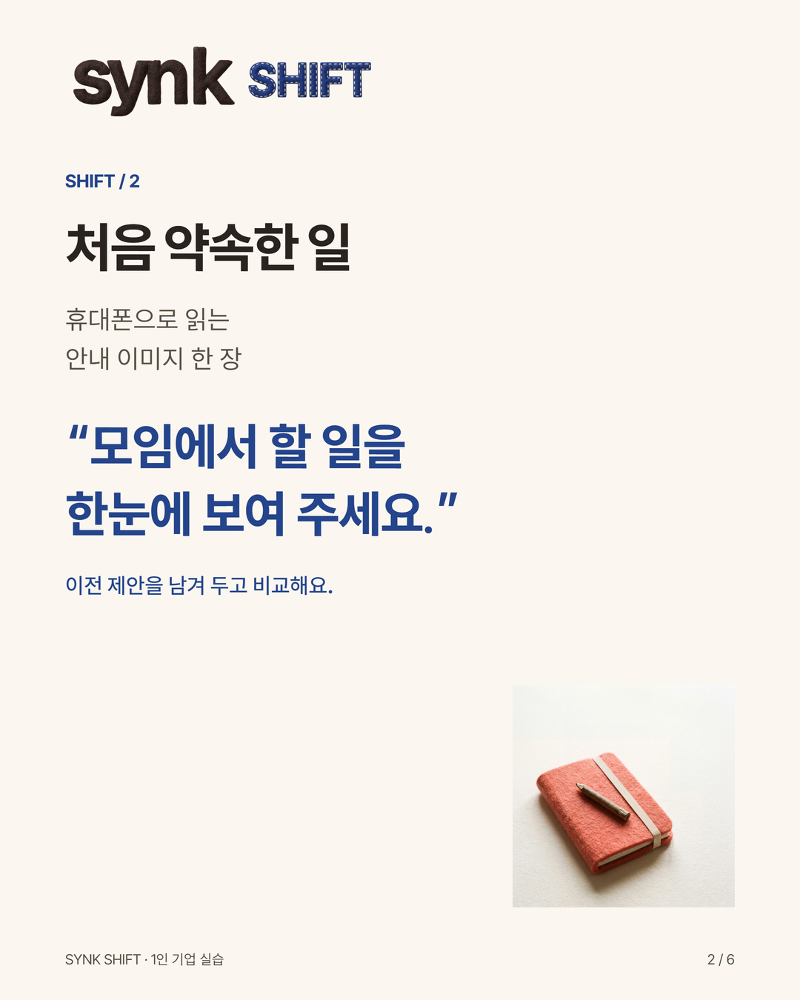
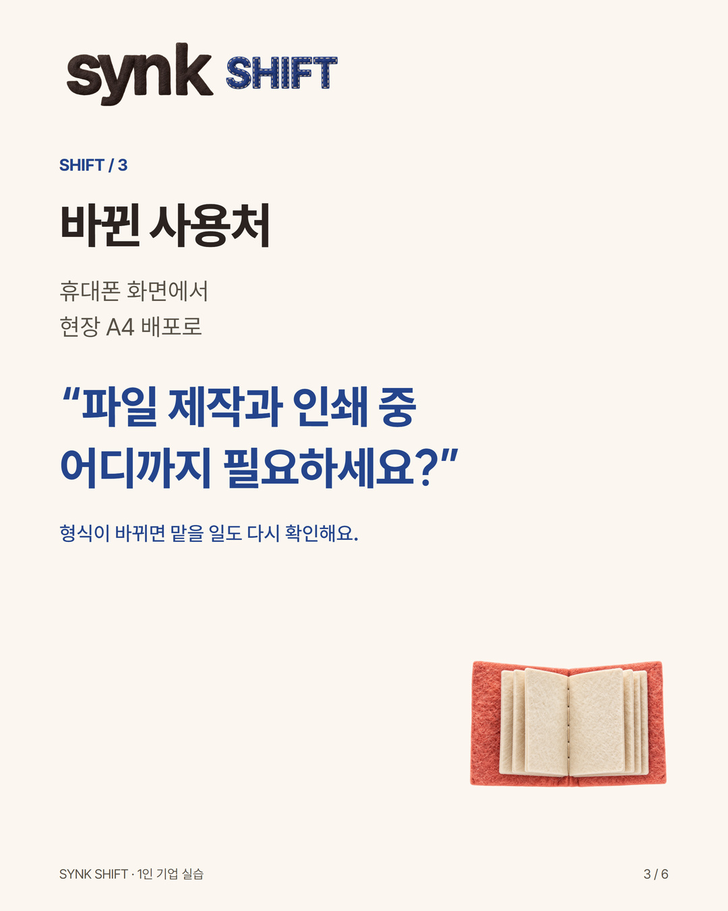
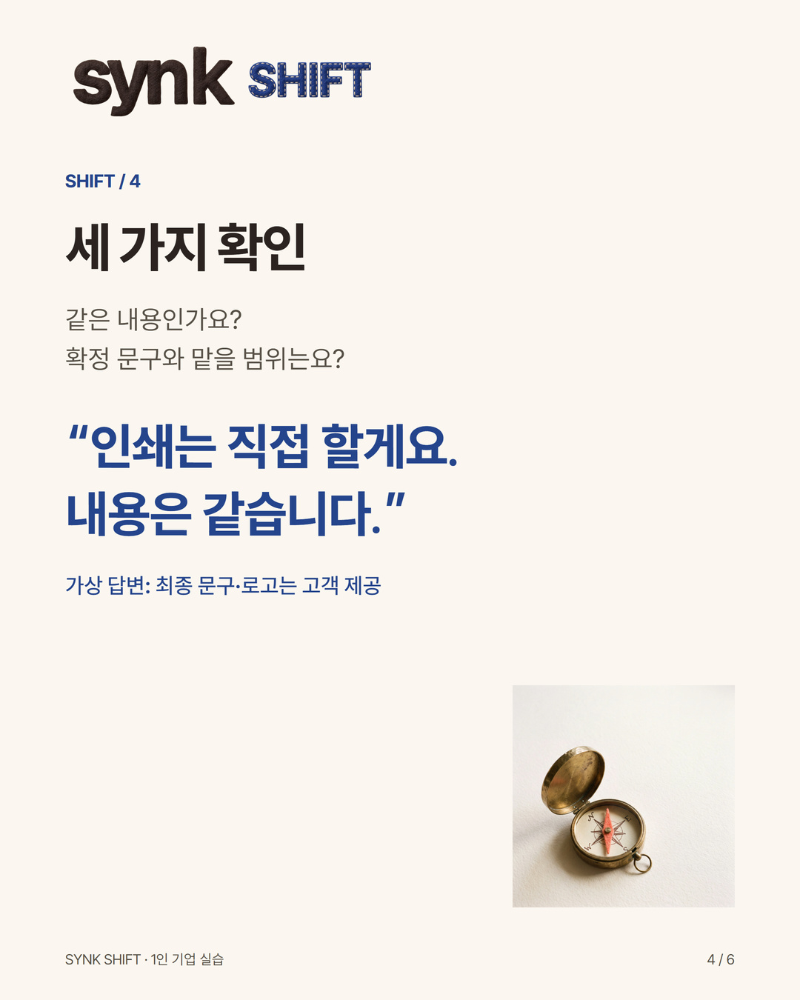
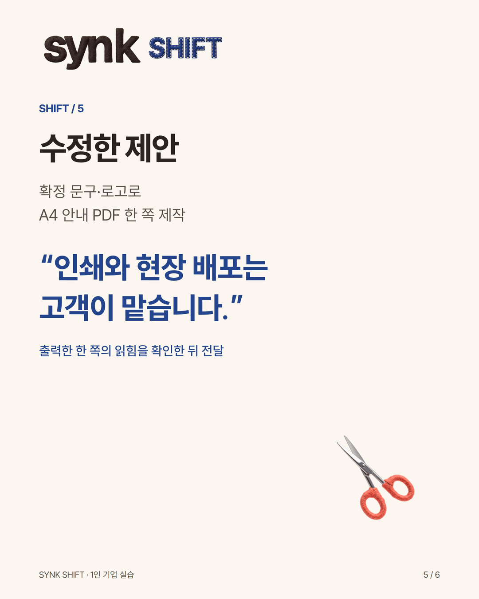
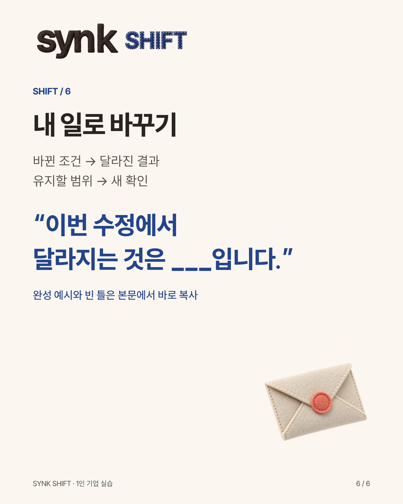

Instagram · @synkbrief
한 줄 바뀐 요청, 어디를 고칠까?
사용처가 바뀌었을 때 제안을 고치는 실습 · 완성 예시와 편집 원본
신규 제작 · 가상 교육용 예시 · 실제 SNS 미게시
게시할 문안
1인 사업자는 고객의 요청이 한 줄 바뀌었을 때, 결과물과 맡을 범위를 함께 확인할 수 있습니다.
가상 고객을 둔 공개 실습입니다. 실제 의뢰·고객 후기·판매 조건이 아닙니다.
처음 요청
‘모임에서 할 일을 한눈에 보여 주세요. 휴대폰으로 읽는 안내 이미지 한 장이 필요해요.’
바뀐 요청
‘이번엔 현장에서 A4 종이로 나눠 줄게요.’
1. 먼저 세 가지를 확인합니다.
같은 내용을 인쇄하나요?
배포할 최종 문구와 로고가 정해졌나요?
파일 제작과 인쇄 중 어디까지 필요하신가요?
예시 고객 답변
‘내용은 같습니다. 확정 문구와 로고를 드릴게요. 인쇄와 배포는 직접 하겠습니다.’
2. 제안을 이렇게 고쳐봅니다.
‘확정 문구와 제공 로고를 사용해 A4 안내 PDF 한 쪽을 제작합니다. 인쇄와 현장 배포는 고객이 맡습니다. 배포일·파일 전달일·최종 문구·로고 사용 권한을 확인한 뒤 작업을 시작합니다. 실제 크기로 한 쪽을 출력해 작은 글자와 연락 정보가 읽히는지 확인하고 전달합니다.’
3. 내 제안에 복사할 네 줄
바뀐 조건: ___
달라질 결과물: ___
그대로인 범위: ___
새로 확인할 것: ___
마지막으로 처음 요청과 수정 제안을 나란히 읽어보세요. 바뀐 사용처가 반영됐는지, 맡기로 하지 않은 일을 새로 약속했는지 확인합니다. 비용과 일정이 달라지면 별도로 합의할 항목으로 남깁니다.
이 네 줄을 저장해 두고 다음 변경 요청에 적용해 보세요. 실제 고객 자료를 공개할 필요는 없습니다.
내 일에서는 사용처, 결과물, 맡을 범위 중 무엇이 가장 자주 바뀌나요?
업로드할 카드





